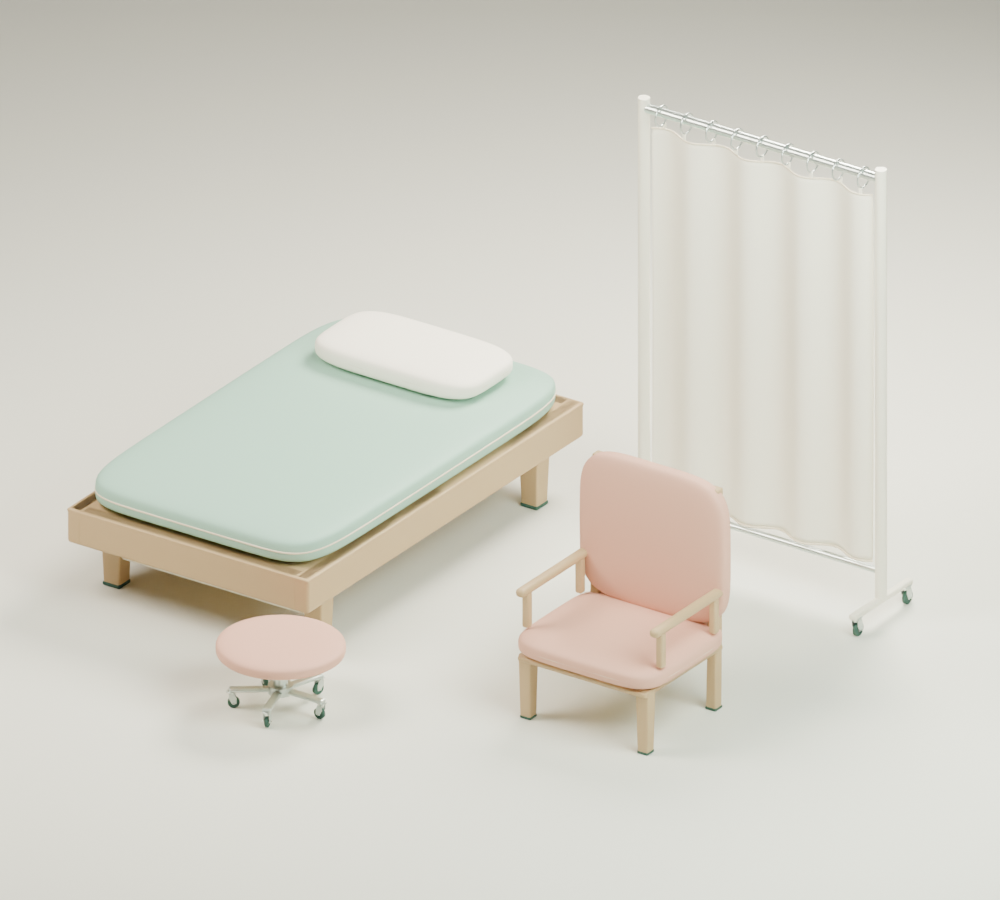
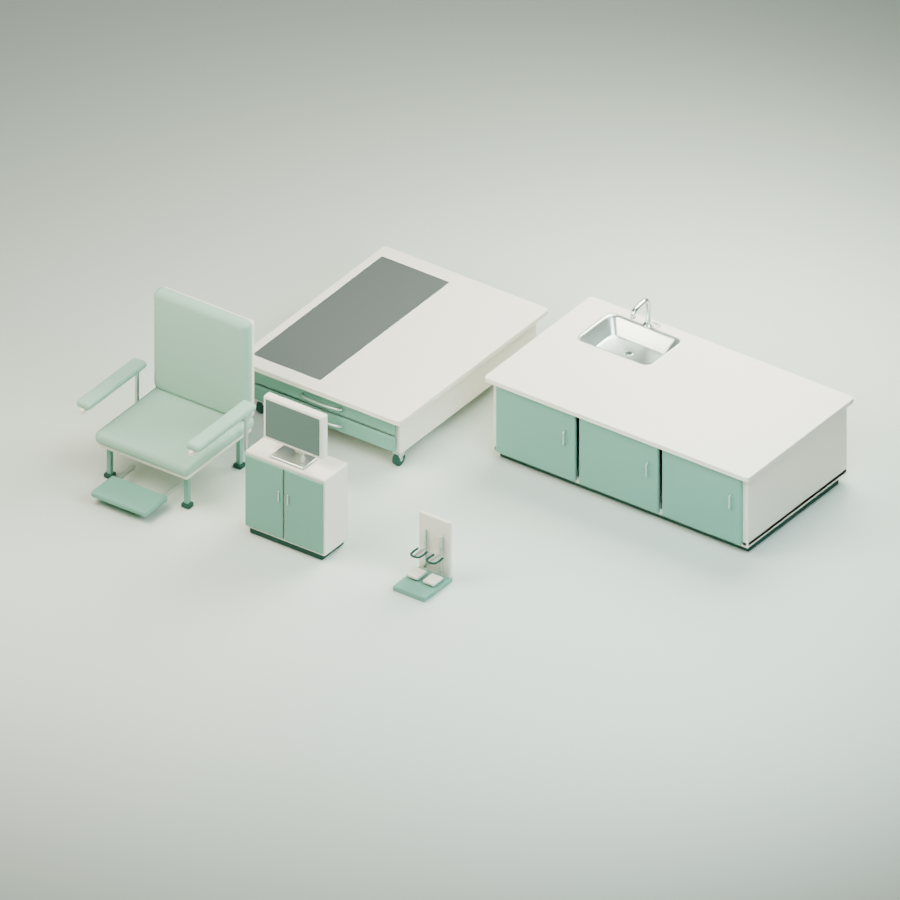
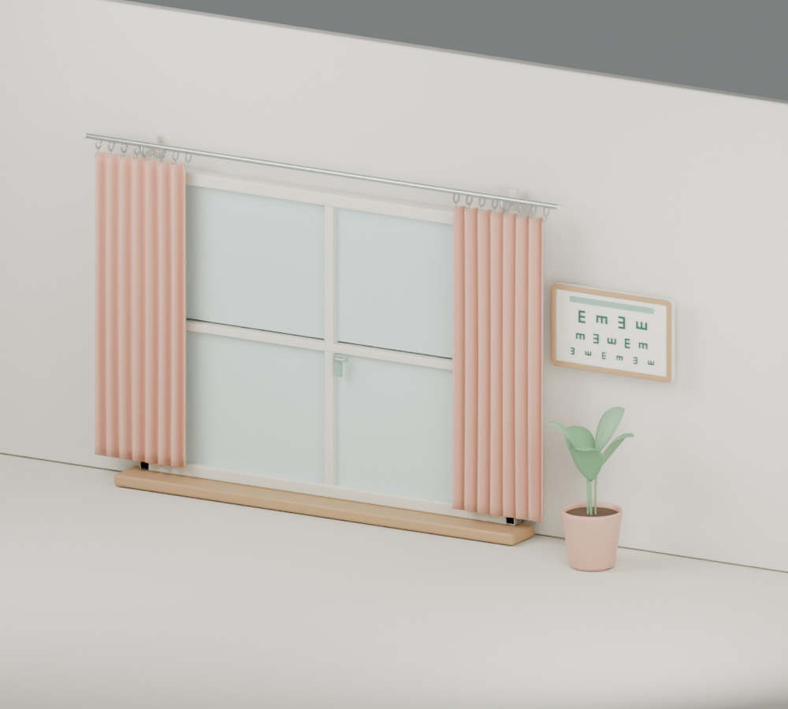
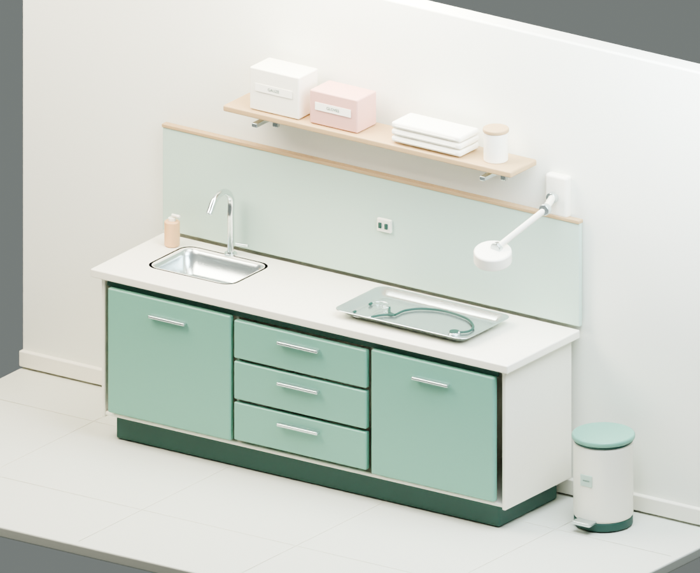
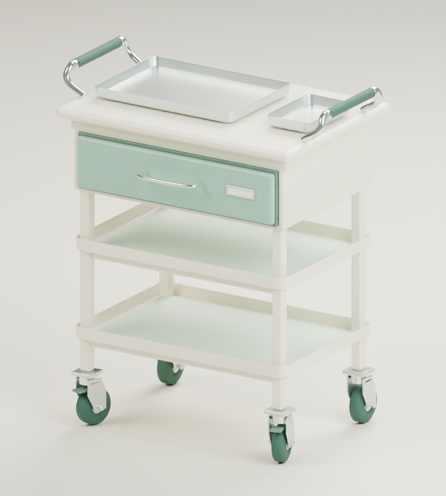
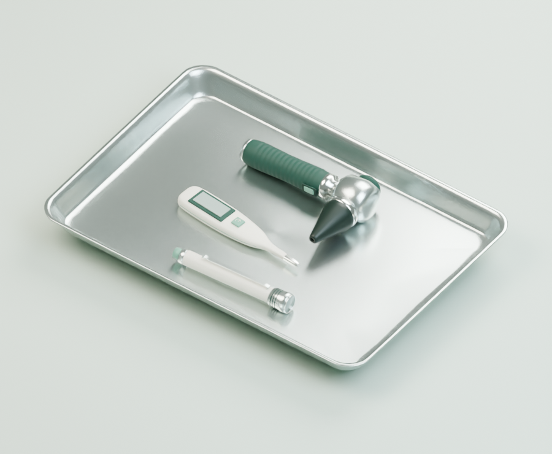
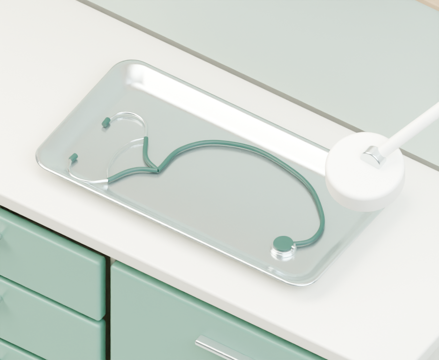

진료실 가구와 장비
침대와 의자, 작업대, 수납장, 창과 커튼까지 실제 진료실에 반영했습니다. 기존 토끼와 의사는 게임 화면에서 그대로 만날 수 있어요.
게임에서 보기 →
드래그해서 돌려보기 · 휠로 확대
3D 모델을 불러오는 중입니다.

침대 · 스툴 · 보호자 의자 · 가림막
환자 의자와 진료실 작업 가구
창 · 커튼 · 벽 포스터 · 화분
수납장과 싱크 · Blender Cycles 렌더
작은 의료 카트와 이동식 트레이
이경 · 체온계 · 펜라이트
청진기와 트레이